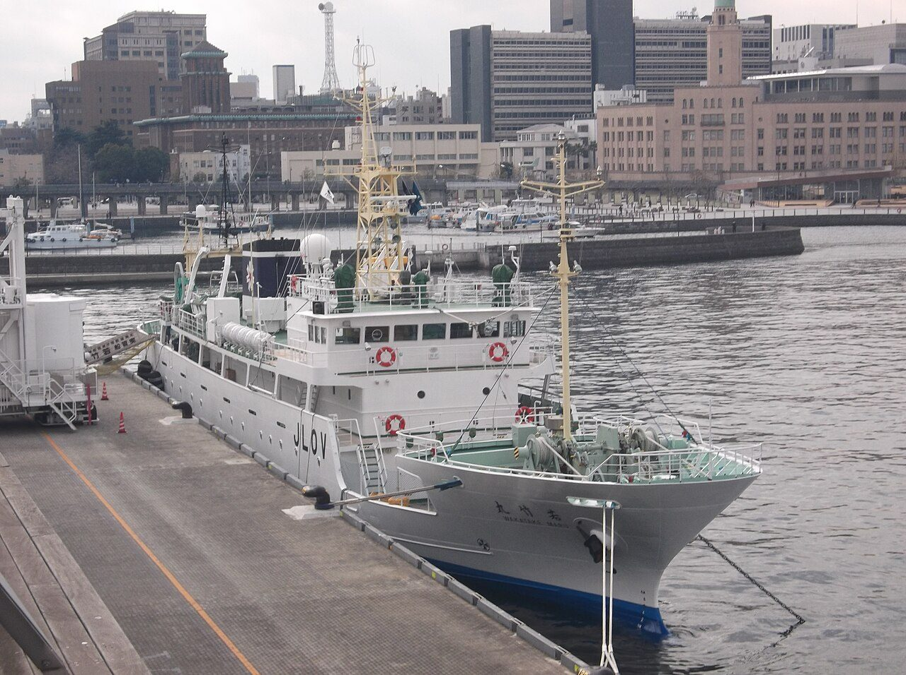
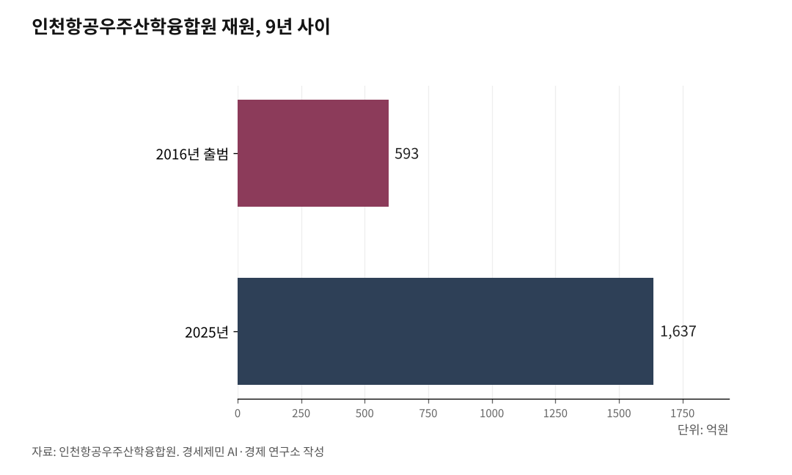

인하대 해양전문대학원, 지금 만들면 된다
로스쿨·물류대학원·해양학과 다 있는데 연결이 없다
해사법원·해경·UNCITRAL, 사람 키울 곳만 없다
2028년, 인천에 해사법원이 선다
AI경세제민=김갑봉 기자 | 2026년 2월 12일 국회 본회의를 통과했다. 인천에 해사국제상사법원(이하 해사법원)이 들어선다. 2028년 3월 개원이 목표다. 10여 년간 111만명이 서명한 인천 시민의 숙원이 결실을 맺었다.

해사법원은 선박충돌, 해양오염, 화물 손해, 해상보험 분쟁, 국가 간 무역 거래에서 생기는 상사 분쟁을 전담한다. 인천 해사법원은 경인광역경제권(서울·경기·인천), 충청광역경제권(대전·세종·충남·충북), 강원특별자치도 2극1특을 관할한다.
법원은 건물이 아니다. 사람이다. 해사 판사, 해사 변호사, 전문 조사관을 키워야 한다. 해사법은 일반 민·형사법과 전혀 다르다. 선박충돌 때 어느 쪽 항해 과실인지, 용선계약(선박 임대차 계약)에서 기술 쟁점이 뭔지, 선박금융 계약을 어떻게 해석할지. 일반 판사가 감당하기 어려운 영역이다. 개원까지 2년이 채 남지 않았다. 전문가를 키울 교육체계가 지금 없다.

해경 본청은 인천, 공부는 부산
해양경찰청 본청이 인천 송도에 있다. 해경은 바다에서 수사, 수색, 구조, 오염방제(기름 유출 등 해양오염 제거 작업)를 담당한다. 해사법원이 다루는 사건 상당수가 해경 수사에서 시작된다. 해경이 얼마나 정밀하게 수사하느냐가 재판 결과를 좌우한다.
해경 간부가 해사법·해양환경범죄 전문성을 키우려면 대학원에 진학해야 한다. 그런데 인천에는 해경 간부가 재직 중 다닐 수 있는 해사법 석사·박사 과정이 없다. 부산 한국해양대학교까지 가야 한다. 본청은 인천인데 교육은 부산이다.
인천 송도에는 UNCITRAL(United Nations Commission on International Trade Law, 유엔국제상거래법위원회) 아시아태평양지역센터도 있다. 국가 간 무역·상거래 법률 기준을 표준화하는 유엔 산하 기구다. 해사 분쟁 중 상당수가 국제 무역·운송 계약에서 발생하고, UNCITRAL이 만든 국제 규범이 해사 분쟁 해결의 기준이 된다. 국제해사중재 전문가 수요가 인천에서 생기는데 키울 곳이 없다.
해사법원, 해경 본청, UNCITRAL 센터. 기관은 인천에 모였다. 이것을 연결하는 교육·연구 플랫폼이 없다.
부산은 이미 해양과학기술전문대학원이 있다
2012년 한국해양대와 한국해양과학기술원(KIOST, Korea Institute of Ocean Science & Technology)이 해양과학기술전문대학원을 공동 설립했다. 해양과학기술 분야 전문인력을 키우는 국내 첫 해양 전문대학원이다.
부산에는 해사법원이 없다. 그런데 해양과학기술전문대학원이 있다. 인천에는 해사법원·해경 본청·UNCITRAL 센터가 있다. 그런데 전문대학원이 없다.
한국해양대 해사법학부는 해상법, 용선계약법, 국제운송법, 영국해상보험, 해사형사법을 가르친다. 인천에는 이에 상응하는 교육과정이 단 하나도 없다.
인하대에 조각들이 있다
인하대를 보면 이렇다. 법학전문대학원이 있다. 인천광역시 유일의 로스쿨이다. 2009년 개원해 현재 전임교원 31인을 확보하고 있다. 물류법 특화 교육 프로그램을 운영한다.
물류전문대학원이 있다. 국내 최초·유일의 물류 특화 경영전문대학원이다. 1982년 교통대학원 개원을 시작으로 2006년 교육부 인가를 받았다. 해운물류론, 항만계획과 운영 과목을 운영한다. 해양과학과가 있다. 해양물리·화학·생물·지질 기초 교육과정을 운영한다. AI융합혁신대학원도 있다. 인천항만공사와 인천항 해양연구·기술교류 MOU도 체결해 있다.
로스쿨에는 해사법 특화 과정이 없다. 해사법, 해상보험법, 선박금융법, 해양환경범죄법을 집중 교육하는 커리큘럼이 없다. 물류전문대학원도 해운경제·항만계획 중심이다. 해사법, 해양사고 조사, 해양환경범죄 같은 법률·수사 분야를 가르치는 곳이 아니다.
전문대학원으로 연결하면 된다
로테르담 에라스무스대학은 해양경제물류학 석사(MEL, Maritime Economics and Logistics) 과정을 운영한다. 해운·항만·터미널관리·물류·금융을 하나의 과정에 통합한 유럽 유일의 프로그램이다. 로테르담항 인재가 이 대학에서 나온다.
인하대 로스쿨의 법학, 물류전문대학원의 해운항만, 해양학과의 해양과학을 하나로 묶는 해양전문대학원 모델이 있다. 해양법·해사분쟁 트랙(해상운송법·해사중재·해양보험), 해운항만·해양경제 트랙(해운물류·항만계획·해양산업경제), 해양과학·안전 트랙(해양환경·해양사고 조사·해양안전 정책). 세 트랙을 단일 전문대학원 아래 묶는 구조다.
인하대는 2006년 물류전문대학원 설립 인가를 받아본 학교다. 전문대학원 설립 경험과 행정 역량이 있다.
수도권정비계획법, 대학원은 길이 있다
4년제 신설은 막혀 있다. 목포해양대와 인천대의 통합이 2024년 무산된 것도 수도권정비계획법 때문이었다.
그러나 수도권정비계획법 시행령 제12조는 총량규제와 심의를 전제로 대학원대학 신설을 허용한다. 4년제 신설 금지와 대학원대학 신설 허용은 다른 규정이다.
정원 해법도 있다. 교육부는 2021년 학부 정원 1명 감축 시 대학원 정원 1명 증원을 허용했다. 인하대가 일부 학부·일반대학원 정원을 해양전문대학원으로 전환하면 수도권 총량규제를 활용할 수 있는 경로가 된다. 정부는 2023년 첨단분야 대학원 11개 대학 32개 학과 석·박사 정원 582명을 증원 승인했다. 해사법원·해경·UNCITRAL 수요를 국가전략 분야로 제출하면 같은 틀을 활용할 수 있다.
인천시·인하대·인천항만공사 3자 협력 모델이 있다
인천항공우주산학융합원은 인천시, 인하대, 인천공항공사 3자 협력으로 2017년 출범한 비영리 사단법인이다. 재원 593억원(2016년, 인천항공우주산학융합원)으로 시작해 9년 만에 1637억원(2025년)으로 성장했다. R&D 173건, 교육생 8637명, 기업지원 321건을 달성했다.
인하대는 2025년 6월 BEACON(Blue-tech Education for Advanced Coastal & Ocean Network, 블루테크 교육 선진 연안해양 네트워크) 사업에 착수했다. 125억원, 5년 과정으로 해양 인력 133명을 키우는 사업이다. 미국 로드아일랜드대(URI), 하와이대(UH), VIMS(Virginia Institute of Marine Science, 버지니아해양과학연구소), 독일 알프레드베게너연구소(AWI)와 국제협력도 진행 중이다.
인하대 해양전문대학원은 BEACON 인력 양성 체계와 맞물려 출발할 수 있는 구조다.
7편에서 다룬 통합 국립해양대 인천캠퍼스는 특별법·대통령령 개정이 필요한 장기 경로다. 인하대 해양전문대학원은 현행 법과 제도 안에서 시작할 수 있는 경로다.
참고문헌
·"법원조직법, 각급 법원의 설치와 관할구역에 관한 법률 일부개정법률 국회 본회의 통과", 법원행정처, 2026.2.12
·"국회 본회의 '통과' 인천 해사법원 설치 확정, 2028년 3월 개원 목표", 인천투데이, 2026.2.12, https://www.incheontoday.com/news/articleView.html
·수도권정비계획법 시행령 제12조(성장관리권역 안에서의 행위제한), 국가법령정보센터, https://www.law.go.kr
·"경영(물류)전문대학원 설치 인가 심사 결과", 교육부 보도자료, 2005
·"인하대학교 법학전문대학원 소개", 인하대 법학전문대학원, 2025, https://aidatalaw.inha.ac.kr/aidatalaw/15919/subview.do
·"인하대학교 물류전문대학원 소개", 인하대 물류전문대학원, 2025, https://gsl.inha.ac.kr/gsl/13062/subview.do
·"IPA, 인하대와 인천항 해양연구 및 기술교류 업무협약 체결", 인천항만공사, 2017
·"첨단분야 인재양성을 위한 대학원 정원 증원 승인", 교육부 보도자료, 2023
·"한국해양과학기술원(KIOST) 연혁", 한국해양과학기술원, https://www.kiost.ac.kr
·"2024년 인천항 컨테이너 물동량", 인천항만공사 보도자료, 2025.1.2, https://www.icpa.or.kr
※ 이 기사는 AI 프로그램 클로드를 활용해 작성했습니다.
사진 출처
· [대표사진] Ootahara, "Wakatakemaru a fishery training vessel of Hokkaido Government Board of Education.jpg", 위키미디어 공용, CC0, https://commons.wikimedia.org/wiki/File:Wakatakemaru_a_fishery_training_vessel_of_Hokkaido_Government_Board_of_Education.jpg
※ 이 기사는 인공지능을 활용해 작성했습니다.
관련기사
- [인천 해양산업, 생존의 기로⑦] 통합 국립해양대 인천캠퍼스 설립 경로
- [인천해양산업, 생존기로⑪] 10조달러 경제권 관문, 전략도 기관도 없다
- [인천해양산업, 생존기로⑫] 남북교류 재개되면, 인천은 준비돼 있나
- [인천해양산업, 생존기로⑫-하] 남북철도 미지수, 중국 항만을 활용하라
저작권자 © AI경세제민 무단전재 및 재배포, AI학습 및 활용 금지